The display of messages may be refreshed manually, or the display may be set to refresh automatically after a specified interval of either 1, 3, 10 or 30 seconds.
The data queue entries are read from the queue without removing them from it, so it will have no impact on programs that are reading or writing to the data queue.
On the context menu of a data queue (right click), then click iSphere Data Queue Monitor.
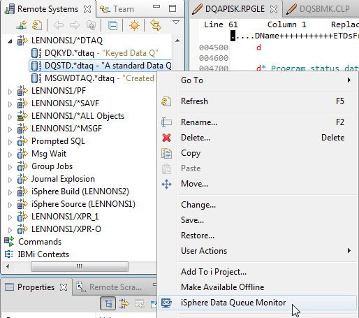
The iSphere Data Queue Monitor tab opens, and if there are entries in the data queue they are displayed:
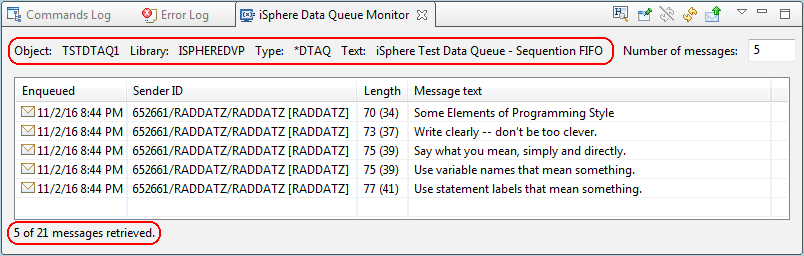
Some of these options can be defaulted: see the iSphere Data Queue Monitor preference page.
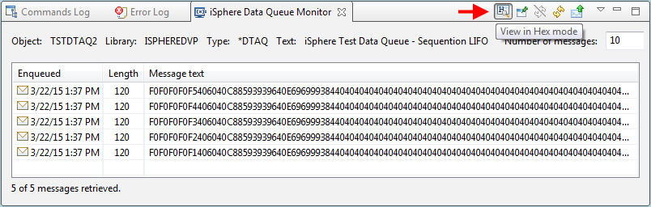
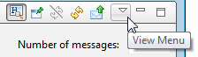
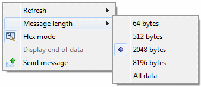
The options are:
| Refresh | - | Opens a sub menu with options to specify the time interval after which the display is automatically refreshed. |
| Message length | - | Opens a sub menu with options to specify the maximum number of bytes to retrieve of each message. |
| Hex mode | - | Toggles the display mode between Hex and Text mode. |
| Display end of data | - | Optionally adds an end-of-data indicator to the message data. This may be useful if your messages have trailing blanks. |
| Send message | - | Sends a message to a data queue. |
| Note: The data queue monitor shows only the first 259 characters of the message data on Windows PCs. This is a known limitation of the Windows SWT plug-in. See: https://bugs.eclipse.org/bugs/show_bug.cgi?id=259013 or https://bugs.eclipse.org/bugs/show_bug.cgi?id=257815 for details. |
To completely display a message, double-click on it; or select one or more messages and from the context menu (right click), then click display. The message is displayed in hex and in character:
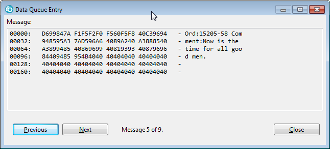
The Previous and Next buttons at the bottom left of the viewer let you move forward and back in the list of messages. The scope of these buttons, and the numbering of the messages, depends on how the viewer was started:
| Double-click | - | The buttons operate on all messages of the list. |
| Context menu | - | The buttons move forth and back within the selected messages. |
If you right click on a message you get a sub menu with these options:
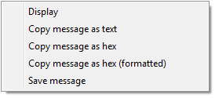
| Display | - | Displays the selected message(s). (This is the same as double clicking on a message.) |
| Copy message as text | - | Copies the message text as displayed in the table to the clipboard. |
| Copy message as hex | - | Copies the message text as a string of hex values to the clipboard. |
| Copy message as hex (formatted) | - | Copies the message text as a string of hex values to the clipboard. The text is formatted into packages for easier reading. |
| Save message | - | Saves the pure message bytes, without key and sender ID, as received from the host to a file. |
If an actual message size exceeds the maximum message length specified for retrieving messages, a data truncation warning is displayed at the bottom of the view:
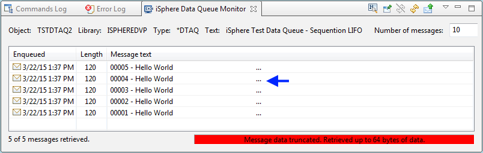
The ellipsis (...) shows where the truncation starts in a message.
If you get this message, you may want to increase the 'Message length' value and then refresh the view. Keep in mind that you may need to decrease the 'Number of messages' being retrieved at the same time, to avoid downloading to much data to your PC.
The 'Display end of data option' adds a '«' character to the end of the message data. This option may be useful for message data with trailing spaces or any other invisible characters:
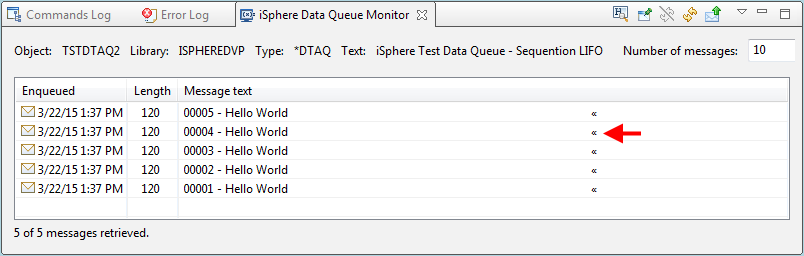
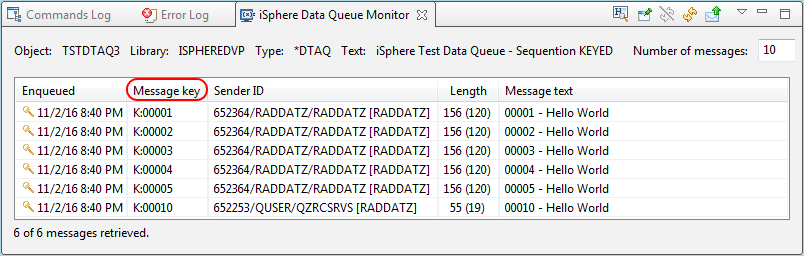
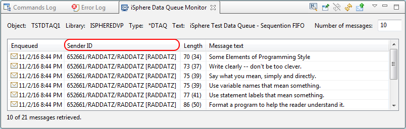
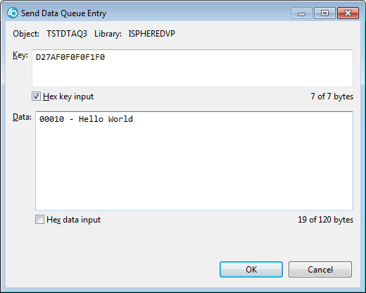